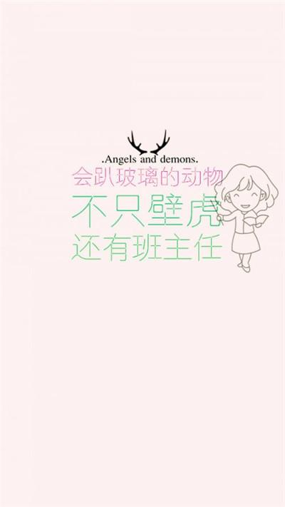
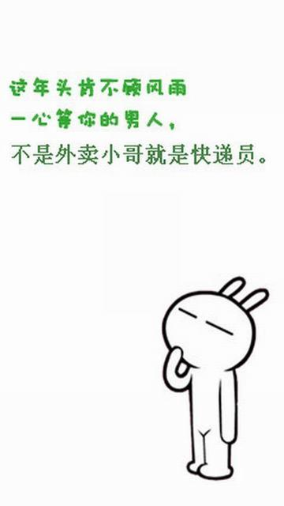

周一
周二
周三
周四
周五
周一的活动

故作神游，忍不住躺在了油菜花里，生活中所有的烦恼都不存在了，跑上了云霄，跑到了你我顾虑不到而遥远的地方，动情地看着天空发呆，天空是如此的蓝，白云是多么的飘逸，耳畔窸窸窣窣的声响顿时都构成了大自然最动听的乐曲。淡淡的，清幽的花香让人不自觉地忘了自己，仿佛与天地同在，与日月同辉，悄然四顾，没有喧嚣，没有离愁，我们也成为了大自然最透明的一份子。醉了，天空醉了，我醉了，你也醉了，醉了尘世间的纷纷扰扰，醉了人世间一切是是非非、恩恩怨怨，醉了一世琉璃。
花开花落花满天，纷纷扬扬的落花飘在空中，落在地上，仿佛冬天里漫天飞舞的片片雪花，晶莹剔透；仿佛王母洒下的碎琼浆，清香甘甜；仿佛人间飘舞的小精灵，天真淘气。白色的樱花，开在人间四月，开在了最美的季节，白色的，粉色的，纷纷扬扬地洒下一地落花，让人不忍一踩，敞开双手走过，掠起了一地芬芳，掠走了一身清香。闭上双眸，敞开胸怀扬起了头，扬起的是笑脸，是朝着阳光45度角的微笑，花瓣落在了发梢，落在了眉梢，落在了脸庞，落在了早已沉醉的心田。

周二的活动
人生如戏，我们上演着悲欢离合，试过欢声笑语，也试过痛哭流涕；人生如戏，我们经历过顺境逆境，尝过成功的甜，也尝过失败的苦。当中的滋味，只有身处其中的自己才能彻底体会。别人可能会以为我们表演得太夸张，其实那都是我们最真实的反应。
人生如戏，总会在我们不经意的时候埋下伏笔，等着某一天让我们恍然大悟。也许有人能够洞察先机，可以逢凶化吉；也许有人是有幸运加持，可以安然度过；也许有人过于迟钝，只能黯然叹息了。
人生如戏，我们以为可以改变自己的命运，却没想到我们的结局早已注定。无论怎么做都摆脱不了戏里既定的安排，可谓殊途同归。如此看来，我们的拼搏和挣扎就像小丑在跳舞，徒惹人发笑罢了。
人生如戏，无论观众对这出戏有任何的意见，在戏里的我们永远都听不见，只能按照安排表演着我们的人生。就算观众为我们叫好，我们也不会因此高兴；就算观众为我们喝倒彩，我们也不会因此沮丧。因为这出戏是属于我们自己的戏，好与坏应该由我们自己来做评判。
周三的行踪


周四的安排
人生犹如一列疾驰的火车，疾驰在生命的旅程，上演韶华绽放的美丽。我们都是故事的主角，无论是熟悉的，陌生的，遇见的，错过的，记忆的，遗忘的，都在竭尽的演好自己的角色，为的只是一场永不凋零的演出。尽管有人下车，有人上车，但却一直在向前，向前行驶。
岁月的沙漏虽岁磨平了每个人的棱角，而往昔的剪影也如片片雪花涌来。但并不是守候在地平线上的原点，并不是输在了等待上，并不是沉湎直至缅怀。错过的终以错过，结束的早已结束，开始的刚好开始，何须转弯，何须留恋，又何须祭奠。
恰逢韶华，岁月靖好。于不知不觉间，开始留恋，难舍沿途的风景。突然，豁朗的天空张开怀抱，处处洋溢芳香。原来，生活如一坛老酒，愈是酝酿，愈是积淀，愈是醇香。靖好的光阴，安稳的现实，又岂能不小心错过 漫步在稻花香间，闲逸在河边垂钓，休憩在懒洋洋的阳光下，即是幸福。此时，不求似昙花一般于一夜间轰轰烈烈的绽放，不求似樱花一样凋零在明媚的季节，但求平淡中包裹着平凡的温暖，享受着家常的温馨。

我想，只要是一位耕者，心田或许永远是播种的季节，也会永远守望着那一季之丰硕的。尽管他们眼前有飘零的叶子落下。季节总是无声的轮回，然而，季节里的旧事越发的清晰。总会想起刚刚刨出来的红薯，紫微微的散发着泥土的芳香。在那秋风刮起的田野，拔上几棵毛豆，掰下几穗玉米，挖出些许花生，在避风的地方用柴火熏烤，瞬间就会散发出醉人的清香。然后，跑到柿树下摘下几个红的发紫的柿子下肚，一顿真正的“野餐”就这样过去了。后来，入伍到空军，每每中秋刚过，在遥远的北疆，总会收到母亲亲手缝制的布鞋，这样的布鞋穿在脚上不捂脚。我穿着母亲做的布鞋，度过了一个又一个深秋，走过了一程又一程的路。母亲去了，那一双双曾经伴我远行的布鞋，一针针，一线线，却早已隽刻在我生命的过往里了。
在这样秋风起的深秋里，总会让我情不自禁的想起那些飘零的叶子，流年里的往事，还有记忆里的亲情。在渐行渐远的时光里，浸润着每一个鲜活的生命，让我们远离了丝丝缕缕的怅然。
周五去哪浪